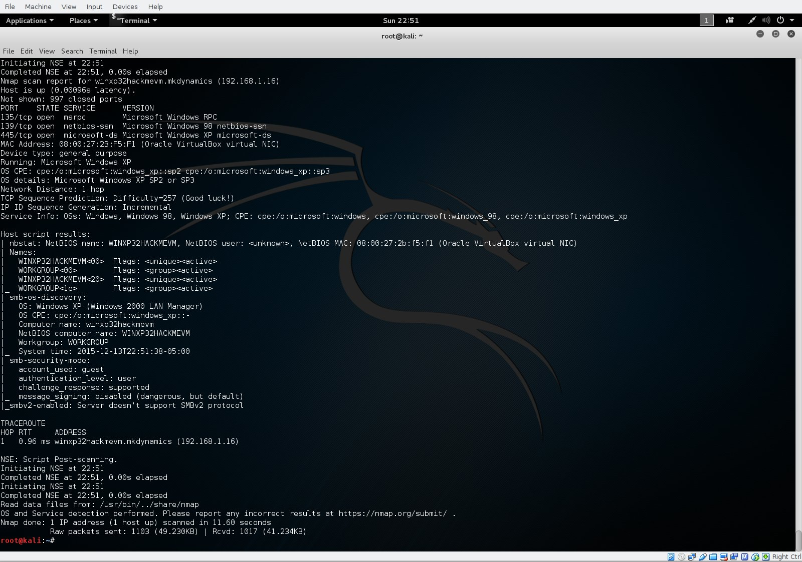
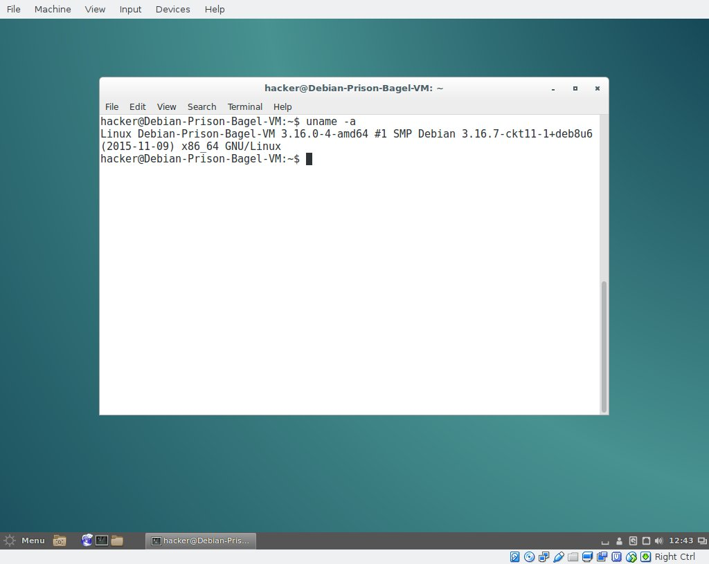
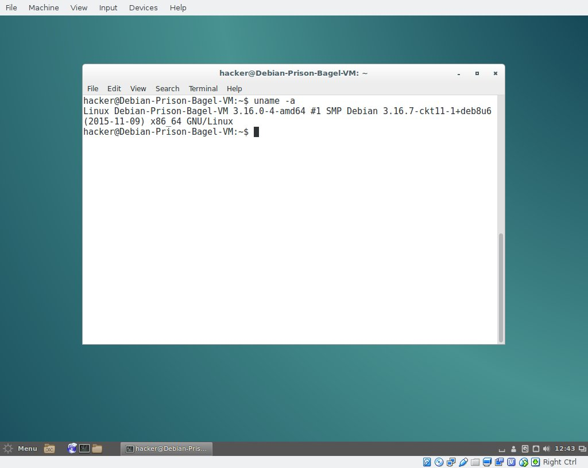
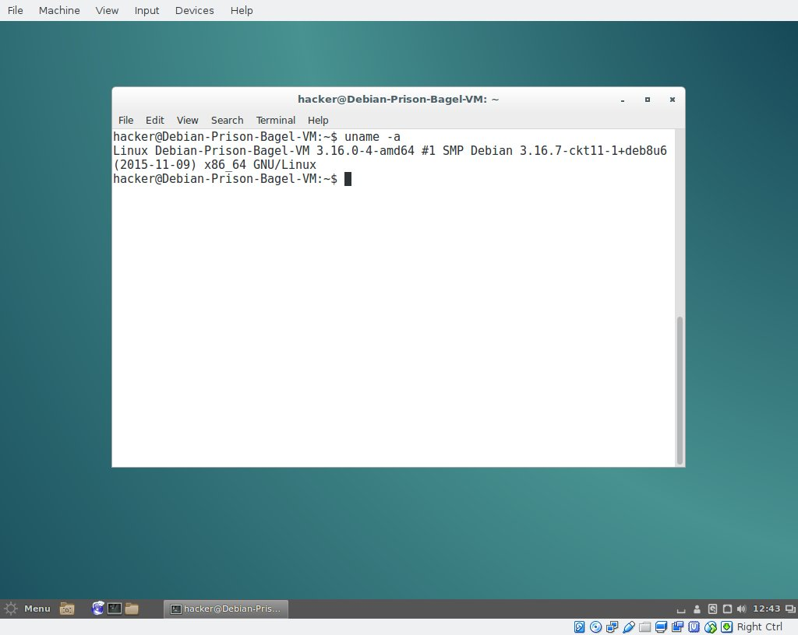
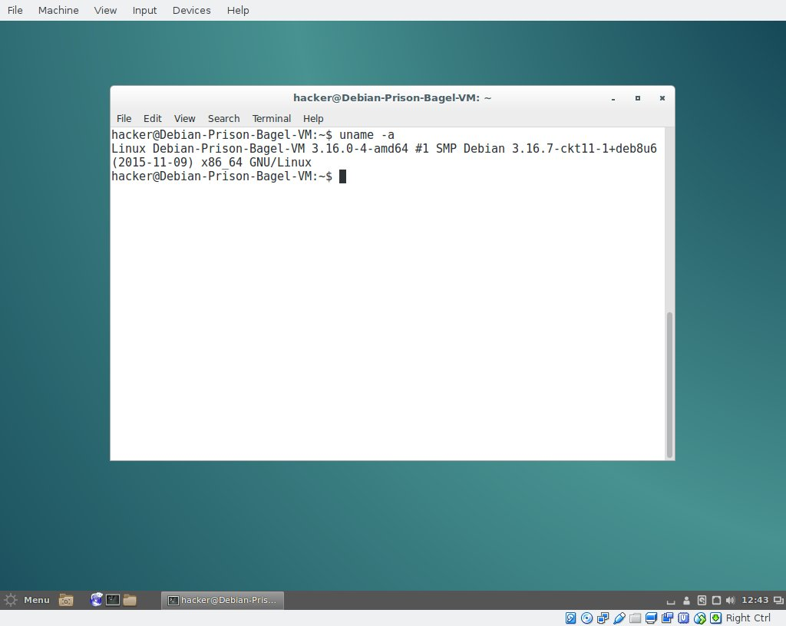
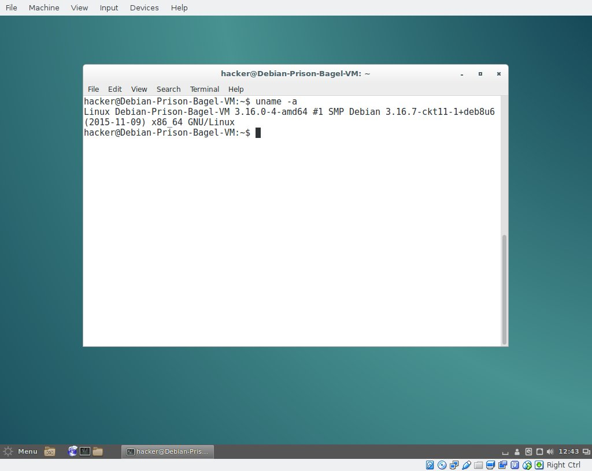

MK Dynamics
Computer Security - Hacking Using Kali Linux
Home
Back
Computer Security - Hacking into A Windows XP Virtual Machine

Hacking into a Windows XP virtual machine using Kali Linux 2.0
Computer Security - Hacking into A Linux Virtual Machine

Hacking into a Linux virtual machine using Kali Linux 2.0

 


